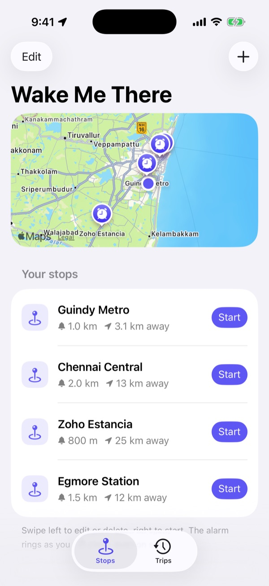
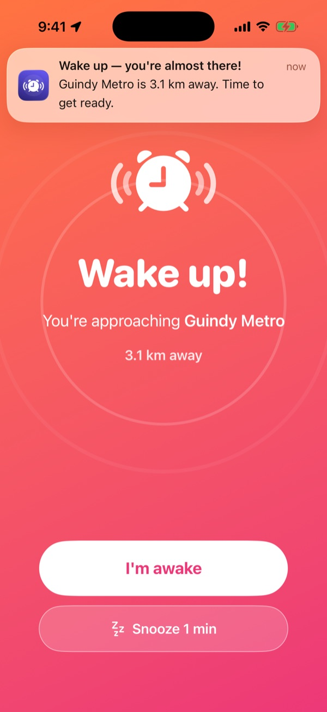
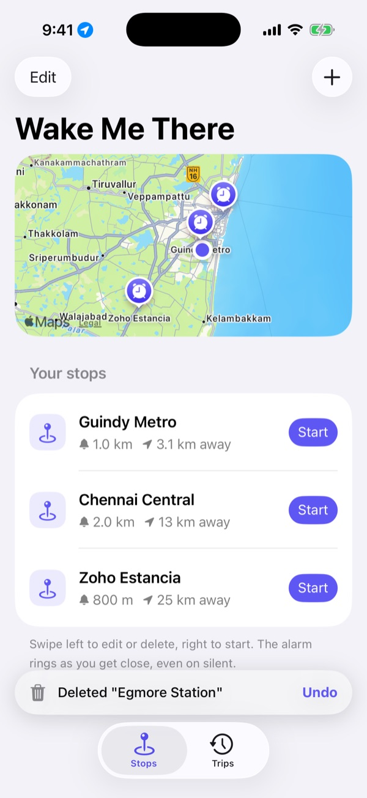
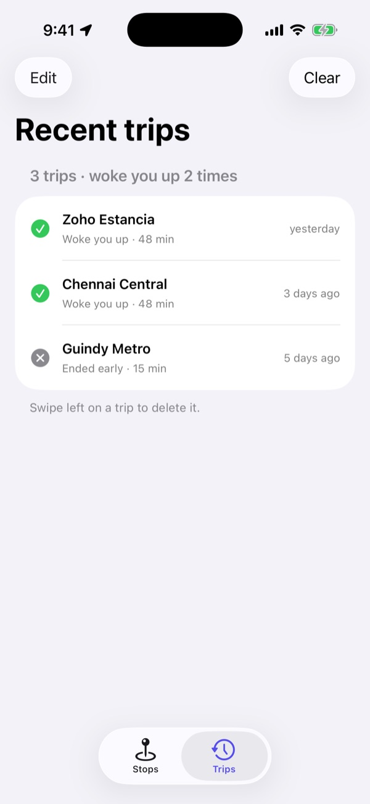

Wake Me There: an alarm set by distance, not by time
A travel alarm for iPhone. Pick your stop, choose how close you want to be woken, then lock the phone and nap on the bus, metro or train. It rings as you approach, even on silent.
- RoleProduct design and SwiftUI build
- PlatformiPhone, iOS 26
- StackSwiftUI, MapKit, Core Location, AVFoundation
- Built withAI-assisted coding (Claude Code)



A time alarm has to guess the traffic
On a long commute it is tempting to sleep, and the only tool most people have is a clock alarm. A clock alarm has to guess when you will arrive, and Chennai traffic makes that guess wrong in both directions. Map apps know where you are, but they are built to navigate, not to wake someone up.
⏰ Too early or too late
Set it for 40 minutes and you wake up two stops early, or the bus was quick and you are already past your stop.
🔕 The phone is on silent
People silence their phone on public transport. A normal notification makes no sound at all.
🔒 The phone is locked
If the app has to be open to work, it does not work. iOS also suspends or closes apps that sit in the background.
What the app had to get right
- Ring every time. An alarm that misses once is an alarm nobody trusts again.
- Never ring early by mistake. A false alarm wakes you for nothing and teaches you to ignore it.
- Set up a trip in a few taps, half-awake, standing on a moving bus.
- Go easy on the battery over a trip that can last an hour or more.
- Ask for permissions when they make sense, not all at once on first launch.
How the design answered those goals
The setting is a distance
Each stop has one setting: Wake me up within a distance, from 200 m to 10 km, with a slider and one-tap presets. The circle is drawn on the map as you drag, so the choice is something you can see. A short tip suggests 2 to 5 km on fast trains or highways, so there is time to get ready.
Saved stops, one tap to start
The home screen is the stops you use, each with its distance from you and its alarm radius. Starting a trip is one button. Swipe to edit or delete, and a deleted stop can be brought back from an Undo toast for four seconds instead of a confirmation dialog.
The trip screen is for glancing
While moving, the screen shows one large number, the distance left to the alarm zone, with a progress bar and an arrival time once you are moving faster than walking pace. Then it tells you that you can lock the phone.

Three ways to ring, so one is always there
Reliability was designed as layers, each covering a case the other misses:
- Live location. A background location session checks the distance on every GPS fix and rings inside the radius.
- A geofence as backup. If iOS closed the app, entering the region relaunches it, and the trip resumes from where it was saved.
- A time-sensitive notification with its own 25-second alarm sound, which iOS can let through Focus.
It ignores fixes it cannot trust
A location more than a minute old, or one less precise than the alarm radius, does not count. That one rule is what stops a jumpy GPS reading in a metro tunnel from waking you two stations early.
A wake-up you cannot sleep through
The alarm plays through the speaker even on silent, loops, and vibrates every 1.4 seconds. The tone is generated in code as a two-note chirp with an overtone, so it carries over road and train noise. The app has no audio files. I'm awake ends the trip. Snooze 1 min rings again a minute later, for the moment you need one more stop to stand up.
Accuracy follows the distance
Precise GPS drains the battery, and it is not needed 30 km away. The app asks for coarse location while you are more than 20 km out, medium between 20 and 5 km, and the best available inside 5 km, when it matters.
"Always" permission, asked at the right moment
On first launch the app asks only for location while in use. It asks for Always when you start your first trip, which is when the reason is obvious: so it can wake you with the phone locked.
A record of every trip
The Trips tab lists each finished trip and whether the alarm woke you or you ended it early. It is the simplest proof that the alarm works. History stays on the phone, keeps the last 50 trips, and can be cleared.

A small native app, with nothing on a server
About 1,500 lines of Swift. Everything runs on the phone: stops and history are saved on the device, places come from MapKit search, and there is no account and no backend.
Debug builds can open straight into any state (a trip in progress, the alarm ringing, the undo toast) with a launch argument. That is how the screens on this page were captured, and it made design reviews repeatable without travelling anywhere.
Where it stands
Built and installed on my own iPhone. The screens on this page come from the SwiftUI build in the iOS 26 Simulator, with sample stops around Chennai.
Ideas I have not built yet: AlarmKit system alarms, a Live Activity showing the distance left on the Lock Screen, a snooze that re-arms at a smaller radius, and a choice of alarm tones.
For an alarm, being reliable is the design
The screens were the easy part. Most of the design work was deciding what happens when things go wrong: the app is closed, the phone is silent, the GPS jumps in a tunnel. Each answer became a rule in the trip engine, and each rule is the reason someone can actually fall asleep.